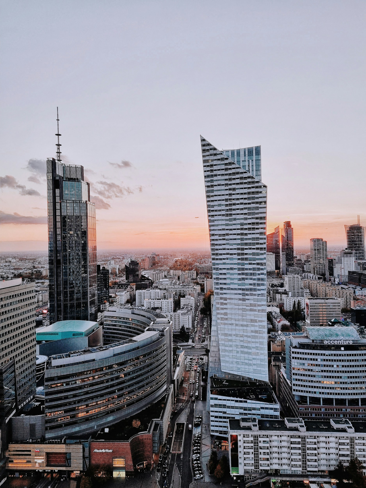

Bieżąca działalność
Płynność, zakup towaru i bieżące zobowiązania firmy.

Planujesz inwestycję, potrzebujesz kapitału na bieżącą działalność albo szukasz finansowania pomostowego? Jeśli dysponujesz nieruchomością, możesz wykorzystać jej wartość, aby pozyskać dodatkowe środki dla firmy. Pożyczka hipoteczna może być alternatywą dla kredytu bankowego, szczególnie gdy liczy się czas lub standardowe finansowanie nie jest dostępne.
Pomagamy przedsiębiorcom i spółkom znaleźć finansowanie pod zastaw nieruchomości. Sprawdzamy oferty banków, funduszy i firm pożyczkowych, zamiast ograniczać się do jednej instytucji. Przy wyborze źródła kapitału uwzględniamy wartość i stan prawny nieruchomości, potrzebną kwotę oraz plan spłaty zobowiązania.
Sprawdź możliwości finansowaniaPłynność, zakup towaru i bieżące zobowiązania firmy.
Zakup nieruchomości, gruntu lub rozwój przedsiębiorstwa.
Zakup działki, rozpoczęcie inwestycji lub kolejny etap realizacji.
Uporządkowanie obecnego zadłużenia lub finansowanie pomostowe.